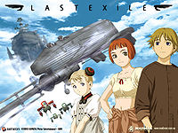

Last Exile
 De: La Frikipedia, la enciclopedia extremadamente seria.
De: La Frikipedia, la enciclopedia extremadamente seria.

|
¡¡¡ARGH, MIS OJOS!!!
Este artículo está escrito así por algún motivo. Puede contener masivas faltas de ortografía u otros horrores lingüísticos.
|
| De la serie anime para todos:
|
| Last Exile
|
| 
|
| retro mundo donde hay que tratar de encontrar como recuperar el poder de mantener el planeta funcionando
|
|
| Género:
|
aventura, navesitas, Yaoi (si hay un poco, bastante, pero uno se entretiene)
|
| Episodios:
|
26
|
| Autor del manga:
|
no se si haya
|
| Publicación:
|
......en consecuencia esto quizás no exista
|
| Publicado en:
|
A.N. (antes de Naruto) 2003
|
| Director del anime:
|
estoy buscando en guguel y en la WIk... (la innombrable)...Koichi Chigira
|
| Transmitido en:
|
mi casita
|
| Ovas:
|
non
|
| Películas:
|
no me he enterado
|
| Notas
|
mucho ojo con Dio, podría reencarnarse y aparecer por tú espalda para abrazarte
|
Last Exile forma parte del imperio de coacción del anime para dominar el mundo y convertir Jap*n en su ombligo, un ombligo muy apretado, como de luchador de zumo me imagino por la cantidad de gente que vive ahí metida, en fin...
Historia
Last Exile nos mete en un universo paralelo en el que se vive un futuro retro con tecnología que en algunos casos nos ofende por troglodítica (comunicaciones por cable e iluminación) y en otros nos deja algo abochornados por incapaces (sip, nuevamente el vuelo antigravitacional y sin aerodinámica, como volar en lavadoras Brastem de los años 60).
En este mundillo creado probablemente entre ácidos o humos particulares, existen dos reinos o naciones en guerra para sobrevivir a su estado de extinción humana, unos por caarse de frío (dOsis)y los otros en una sequía masacrienta y aguas contaminadas (Anal-todo), todo ello por engañar al dealer principal del planeta, al que llaman Exile, queriendo hacer negocios sin su mediación, tonces de ahi viene la paradoja, osea la contradicción de climas... entre ambas naciones hay una nube gigantesca llamada la gran corriente, conformada por el consumo masivo de estupefacientes, tanto de los habitantes del planeta (25 % aprox.) como de su distribuidor (Exile 74% aprox.) que encima resulta bastante belicoso porque viene de otro planeta, o al menos vive en otro planeta...
En este entorno viciadillo viven los protagonistas que se dedican a las historias más irrelevantes posibles con el único fin de hacerse con el poder que tiene Exile y así dominar las ventas de la merca, cosa que si ves la serie es bastante difícil...
Como última recomendación antes de entrar en detalles de todo tipo que no llegan a nada... te aviso que el nivel de Yaoi alcanza niveles peligrosos si no eres tolerante, gay o yaoista, so si eres sensible o te haces al pendex procura estar bien acompañado de tu asesora más cercana, mira que talvez logras algo con esta ofrenda a sus aficiones, solo piénsalo, nos sería tu mujer ideal una que te acopaña a ver una serie interesante y plagada de Yuri del mejor??? salvo que sea lesbiana y lo difrute más que tú, pero toma nota de todas formas...
Personajes
- Alex Rowe:el mega personaje extra Yaoizable, es el capitan del Silvana y la razón del moje de Sofía, busca constantemente a MAestro Delfine para reclamarle por una merca adulterada que le vendió años atras y q mato de sobredosis a su entonces pareja (su nombre era algo así como que Yur, so dudamos un poco acerca de su género o sexualidad)
- Princesa/Reina Sofia Forrester
zorrx primera Primer oficial del Silvana y posteriormente reina del cabarete de Anatore, se empapa por Alex (y por Claus) y haría cualquer cosa por el "capi", tiene tremendos atributos y suele darle poca ala (oportunidad para darle un sacudon, polvox, agarrada) al capitan cafeinómano del Urbanus pero nunca le cede un mordidita (al parecer).
- Claus Valca Ó Vuelca El prota y más amigable de todo el reparto, se reparte con casi todo el plantel de la serie menos con Lavie, que es como su hermana, este simpático piloto mensajero se buelve hacia las aventuras en el cielo para conocerlo mejor, luego explicaremos su rol en la serie
- Tatiana y Alistia: Maravillosa pareja YURI, pelean, se detestan un rato, se dejan sabotear por Vuelca pero terminan juntas a pesar de todo, son piloto y copiloto de combate en un Tarro (Vanship) rojo del Silvana y son las ExperteN, se encargan de dar el back up a las misiones y llenar de alegría la vida de los y las yuriseras...
- Mecánicos del Silvana Anecdótico y cariñoso grupo de técnicos en todología de las naves, estan compuestos por hombres de varios estratos de edad y diferentes niveles de homosexualidad (el extremo es Gale, primo lejano de Huevoduro de Condorito), tienen curiosos rituales de iniciación para el plantel nuevo, sino verifícalo viendo la recepción de Moran a la nave...
- Moran Shetland (tierra de la damier) El acosado, infortunado, inutil, semi tarado y raro soldado de Analtodo que se esconde detras de sus camaradas para sobrevivir a las batallas y prolongar su miserable existencia hasta que le dan un disparo certero y de alguna manera termina casado y con hujos, quizás al amparo del imperio que conforma Alvis al final de la serie por cierto su esposa es un soldado tb, Dunya de DosiS, medio acopaibada (cretina) como su maridete...
- Lavie Head (le vi las... la cabeza??) copiloto de Claus (no de Santa) vive hecha un camote por el y se pasa media serie celándolo pero no lo cuida y al final no se sabe si después de abuenarse por lo menos se lo peta... es hija de un conocido copiloto mensajero, ella ayuda a terminar la misión y reconstruir el imperio de la merca en el planeta, siendo la mano derecha de AL
- Dio y Luciora Pareja yaoi de la serie, mucho toque toque y momentos de enternecimiento, cosas por el estilo, ninguno sobrevive a la serie y eso le encanta a las fans, pero we`, hablaremos de ambos al final del artículo con más calma
- Maestro de los Delfine. La gruesona mala que merece ser estacada, sea como sea q lo hayas entendido, deja de leer Hentai y sigamos, ella domina el Exile con sus perrunos encantos, luego pelea bastante para no perder su poderío pero Al es más joven y al EXILE le gusta el lolicom...
- Gente del dildo o consejo Raros y más raros, aparecen por doquier para rellenar escenas y dar a entender que este pueblo o gente no esta conformada solo por Delfine, sus
putos sirvientes y la pareja antes mencionada
- pilotos Vanship de guerra: al final hay como doscientos, son bastante creativos y tiene buena puntería, en general muchos personajes y naves de relleno para dar un poco de sombra o respaldo a los y las protagonistas
- encargada de escuchar en el Silvana la encarnación de un buho en una mujer q todo lo escucha, tooooodo, so mucho cuidado con tus movimientos corporales cerca de su presencia...
- Alvis Hamilton (la verdadera dueña del busine, le dicen AL y no corre en la F1) niña pequeña y a prueba de valas de unos 6 años, es maniaco dependiente obsesiva y se aferra a gente u objetos para sentirse segura (por ejemplo el carnerito de peluche, Lavie y el putillo de Claus), es heredera y jefa del clan de mercaderes irregulares del mundo de Last Exile.Aunque cualquiera que la vea podría pensar q es medio atolondrada, ella posee poderes PISquicos con los que domina y destruye a Exile, el gran dealer, es capaz de leer la mente a pesar de ser analfabeta. Además es aprendiz de copiloto la condenada...
- Vincent Alzey (no el Vincent de Cowboy bebop) Cafeinómano que esta a cargo de la flota de naves US de Analtoodo (todito)(sebastianUS, georgiUS, julianUS, martinUS ) especialmente la urbanUS que es donde guarda su cafetera.Esta en constante celo contra Alex porque se quiere petar a Sofia pero esta no le da un centímetro de cuero... a pesar de sus antecedentes...
- el peluche de cordero que dice beeeeeeeh
sin comentarios acerca del complejo que desarrolla este ser inanimado en sus dueños, codependencia entre otros
Naves
Vanships
Los Vanships son naves de dos tipos de envios y de guerra
Las primeras son inspiradas en la ficha del auto del Monopoly, cuentan con un fuselaje de lata para acerlas mas ligeras y el copiloto controla la velocidad y la precion del agua y el combustible mientras el piloto la direccion y la trayectoria. Las segundas cuentan con un fuselaje de acero para q las balas no lo traspasen tan fácil y un motor doble, el copiloto mira exactamente lo mismo q el de el otro tipo de vanship pero tambien lleva el control de las recargas las municiones y piloto maneja y lleva el control de la puteria y el fuego.
Las Vanships son naves q en base al principio del la antigravedad vuelan a altas velocidades y en espacios reducidos
Silvana
Llamada la nave más segura del mundo, es la casita del árbol de Alex a quien describimos en el casi útil apartado de personajes... (editando, tengo sueño...)
El Silvana en si es un acorasado de tipo velos contruido por Alex la cual cuenta con 4 cañones principales y una bateria trasera embuelta en una corasa movil
Naves de Anal-todo
Son como barcos camuflajedos de naves centraeli de Robotech y son un desperdicio de tiempo a la hora de pelear o combatir, además suelen irse a pique con el primer cañonaso, por lo que es probable que se trate de tan solo dos mamparas de bajo presupuesto montadas sobre un globo de aire caliente...
lo único interesante de estas aeronaves es la diversidad de nombres evefrénicos que se les puede pintar en las trompas, acompañados de dibujitos de cartas de adivinación y Card Captor Sakura.
Naves de dOsis
Son Dildos voladores que surcan el cielo dándole placer a los ejércitos del planeta sumergido en drogas de Exile, su configuración básica es similar a las de analtodo, salvo que si tienes modelos a escala de ambas, estas últimas necesitarán menos lubricante a la hora de jugar a solas en las tardes solitarias en... CENSURA A LOS RELATOS pRoN ACTIVADA...
Naves del Gildo (consejo)
El consejo se desplaza por los cielos de Exile en naves de origami, sí, el arte japones de hacer animalitos de papel doblado, estos bólidos de papel gigantescos están construidos con tecnología desconocida y suelen estar configurados en forma de estrellas de 4 puntas y cola de cometa (volantin o como le llames en tu barrio).Resultan ser bastante duras por fuera dadas las muchas capaz de carpicola (cola blanca, pegamento de preescolar) que le ponen, pero son inflamables desde adentro una vez les haz hecho un agujerito...
Curiosidades del Anime
- Yaoi:Como no podía ser de otra manera, esta plaga cultural atenta contra la serie al introducir... permitir la entrada... ah!!!!, incluir a Luciora y Dio, un par de pseudo-muchachos que son emocionalmente dependientes uno de otro, a pesar de que Dio quiere darse a Claus a como de lugar, cosa que como veremos posteriormente no se descarta como un hecho en la historia de la serie.
Además en un momento dado de la serie, Moran se une al equipo de mecánicos gay alegres del Silvana, recibiendo la iniciación de honor en un rito de inspección de manguera, limpieza de escapes y calibrado de succión... poco después de ser desnudado grupalmente en el hangar de la nave ante la mirada impasible de Lavie, una reconocida yaoista.
En el caso de Luciora la cosa se pone seria puesto que este, textual, se muere por Dio, en todo sentido...
- Yuri:Lamentablemente en este aspecto solo queda hacer conjeturas acerca de la extraña y poco expresiva relación de las "mejores amigas" piloto y copiloto de la Vanship roja especial, Tatiana y Alistia (ambas con momentos hetero en la serie) que terminan juntas en los últimos 6 segundos del último capítulo.
- La actitud amigable del
p*to protagonista... (Claus, digo por si aca...):Claus es un muchacho que entra en la adolescencia y como cualquier otro jeropa muchacho de su edad se dedica a explorar ampliamente su nuevo equipo de hormonas y atributos anexos, en este camino hacia el autoconocimiento, se topa con varios personajes que definirían su sexualidad, debido a que como quedó huerfano a corta edad, tuvo que encontrar su propio camino a la depravación, pasamos pues a describir sus relaciones y exploraciones con cada uno de ellos...
- Lavie:Su compañera de tooooda la vida y a quien no toca ni para saludarla, a pesar de que anda semiexpuesta y SIN sujetador (bra) todo el día, incluso comparten camarote en el Silvana, y NADA.
- Equipo de mecánicos del Silvana: Probablemente le dieron una iniciación especial de verificación de mangueras y caño de escape como al miserable de Moran cuando llegó a la nave.
- Princesa Sofia: Su primera vez, le brinca la zorra disimulada y frustrada de la 2da al mando de la nave, para descartucharlo y ver si se pasa al bando hetero, la vieja esa pederasta...
- Tatiana V.: ESO NUNCA PASOOOOOOO, LARGA VIDA AL YURI, MUERA CLAUS POR INTENTAR DE MANCHAR A TATIANA....
- Dio (y probáblemente Luciora): este pesonaje que pertenece originalmente al Dildo, se pasa al Silvana persiguiendo al p*t* en cuestión y ahí pasa de todo, incluidos muchos piquivuelques y abrazones desde atrás, al final este personaje se deprime y se suicida porque se queda sin presa para mordizquear y tratar de poner
arrecho loco.
Para saber más
Autor(es):
- Diegocon13
- Naruto hyuga
- Lljosemll
- Naitsabes
- Prototype
- Dark temptation
- Archer
- Harry El del Pote
- Law ripley
- Zenzo
Frikipedia 2005-2016, Licencia
GFDL 1.2 - Extraído por FrikiLeaks